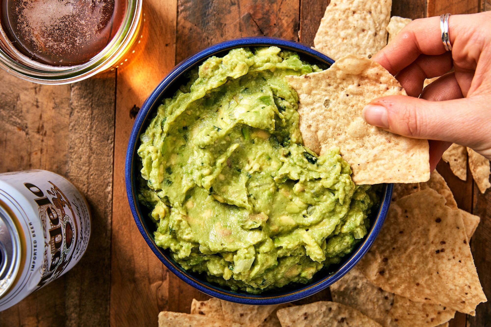

Home
Crowdpleasing Guacamole

This is my go-to contribution to any 'bring a dish' event and
always seems to be a crowdpleaser. Serve with good quality corn
chips, Mission chips are my supermarket favourite here in Sydney.
I find it's best to make this at least 1hr before it will be
eaten as it helps the flavours infuse and mellow. Contrary to
what you might think, it will not brown that quickly as long
as it is stored in an airtight container and covered in a thin
layer of lime juice.
Ingredients
If you can't find ripe avocados, don't make guac - it's that simple!*
I really can't emphasise this enough: if you can't get hold of
ripe avocados, make something else. Hard avocados lack not only
the smooth texture, but also the rich flavour we want to
showcase in a good guac!
Although I have tried to provide a measured ingredients list here,
in reality making this guac always involves a fair bit of tasting
and trial and error as every batch can turn out slightly differently
based on the specific produce used.
Per 1 large avocado - multiply ingredients to make bigger batches
- 1 large ripe* avocado
- 1/2 lime, freshly juiced
- 1/8 large red onion, finely diced
- 1/2 clove garlic, finely minced
- 1 tbsp finely chopped coriander leaves
- 1/4 tomato, seeds and juice removed, finely diced (optional)
- Pinch ground cumin (secret ingredient!)
- Salt (roughly 1/4 tsp)
Steps
-
Add the lime juice to a bowl. Add the onion and garlic to the lime juice
- this will help mellow some of their rawness. Add the cumin. Set aside.
-
Halve the avocado, remove the pit, and spoon the flesh into a
bowl that is big enough to hold all the ingredients. Use a fork to mash
the avocado until fairly smooth. If you like a chunkier guac,
I recommend setting some avocado chunks aside to add back in later.
-
Add the lime juice mix to the avocado. Stir to mix and mash more
until smooth - the lime helps to break down the avocado.
-
Add salt to taste. This will require some trial and error and tasting!
We want to add salt enough to bring out the flavours but not so much
that it tastes salty. I usually find around 1/4 tsp is needed. If you
add too much salt, add a little more lime juice until to rebalance the flavour.
-
Stir through the tomato and coriander leaves. If you set aside
avocado chunks earlier, return these to the bowl and mix. Taste
again and adjust salt and lime juice as needed.
-
Cover with an airtight lid or cling wrap and store in the fridge
until serving. If guac will be stored for more that an hour or so,
smooth off the surface of the guac as much as possible then cover
with a thin layer of lime juice. This will help reduce browning.
When serving, the lime juice can either be poured off or stirred through.
-
Serve with warmed corn chips, or use in other mexican dishes.